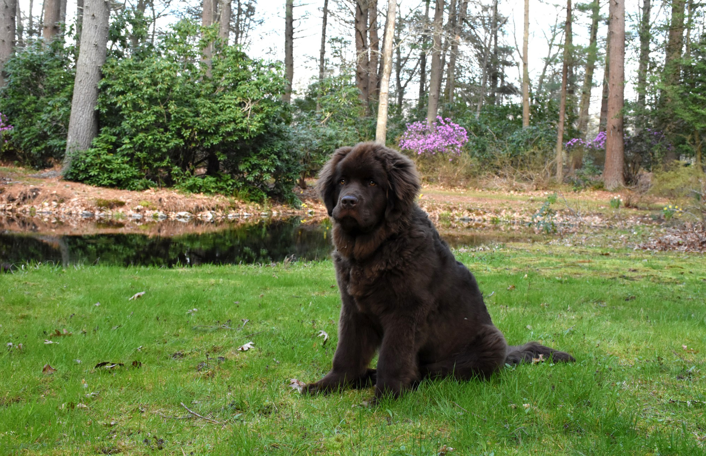

Le Terre-Neuve, un grand canadien!
Le Terre-Neuve est un chien d'origine canadienne. Comme son nom l'indique, il provient de cette grande ile de l'Est du pays. Il est en maitre nageur et un très bon chien de sauvetage.

C'est un chien qui a besoin de bouger. Malgré sa puissance et sa forte corpulence, c'est un chien qui a beaucoup d'énergie et qui a besoin de bien la dépenser.
Les vidéos qui parlent de cette race sont rare sur internet. Mais je vous en ai quand même trouvé une qui en parle bien! C'est la chaine Esprit Dog: